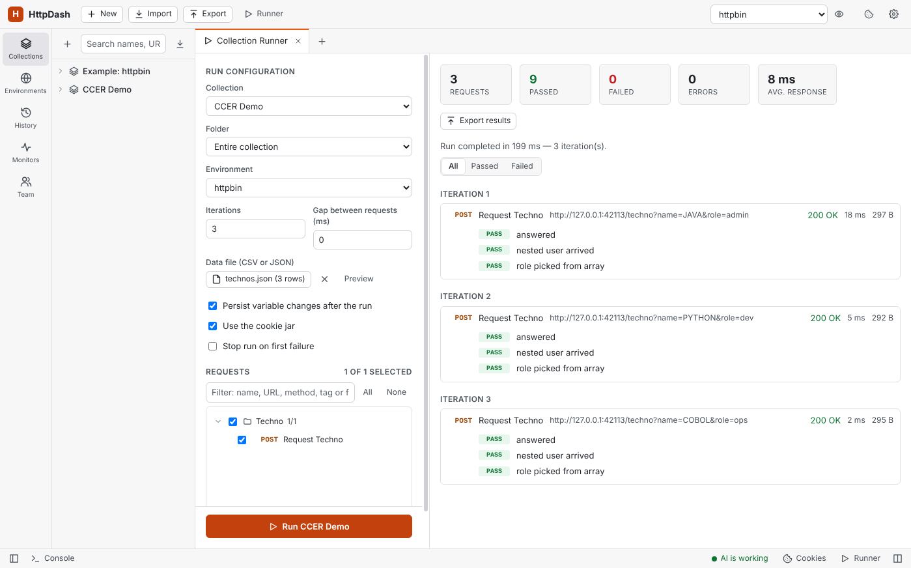

Data files (data-driven runs)
A data file runs the same requests once per row: one row per iteration, in the Collection Runner, the command line (-d) and for AI agents (startRun).
Write the file. CSV starts with a row of column names; JSON is an array of objects, one per iteration.
techno,expected_status JAVA,200 "C, C++",404[ { "techno": "JAVA", "expected_status": 200 }, { "techno": "C, C++", "expected_status": 404 } ]Use the columns as
{{techno}}anywhere a variable works (URL, params, headers, body, auth), and in scripts aspm.iterationData.get("techno")(or the legacydata.techno).Pick it in the Runner: Data file (CSV or JSON) → Select file. The button shows the file name and row count, Preview shows the rows as they were read, and × removes the file.
How it behaves:
- Iterations: choosing a file sets Iterations to its number of rows. Set more and the rows start over (with 3 rows, iteration 4 uses row 1); set fewer and only the first rows run.
- Precedence: a column beats a global, collection or environment variable of the same name; only
pm.variables.setin a script beats it. - CSV: columns are separated by commas (a file Excel saved with semicolons reads as one column: save it as "CSV UTF-8 (comma delimited)", or use JSON). Quotes work as usual (
"C, C++",""for a quote), blank lines are skipped and a UTF-8 BOM is fine. Every value is text, so compare withNumber(...)in tests. - Login requests: auth dependencies still run when the login request is unticked in the run, so you can tick only the requests that use the data.
- Stop run on first failure stops the whole run, not just that row's iteration.

Nested JSON in a data file
Only a row's top-level keys become variables. In a JSON row like { "id": 7, "user": { "name": "Ada", "roles": ["admin", "dev"] } }:
| In the request | Is sent as |
|---|---|
{{id}} |
7 |
{{user}} |
[object Object] (not JSON) |
{{user.name}} |
{{user.name}}, left as it is (there is no path lookup) |
This is how Postman and Newman behave too, so collections run the same in both. CSV files are always flat: a column named user.name is a variable with that whole name.
Scripts get the real objects, so build what the request needs in a pre-request script (on the request, or on its folder to share it):
const user = pm.iterationData.get("user");
pm.variables.set("userJson", JSON.stringify(user)); // the whole object, as JSON
pm.variables.set("userName", user.name); // a field deep inside
pm.variables.set("firstRole", user.roles[0]);
{ "id": {{id}}, "user": {{userJson}}, "role": "{{firstRole}}" }
Leave {{userJson}} unquoted, since it is already JSON; numbers and booleans such as {{id}} can go unquoted too. To send each row as the whole body, use pm.variables.set("payload", JSON.stringify(pm.iterationData.toObject())) and make the body {{payload}}. Tests can check against the row the same way: pm.expect(pm.response.json().user).to.eql(pm.iterationData.get("user")).